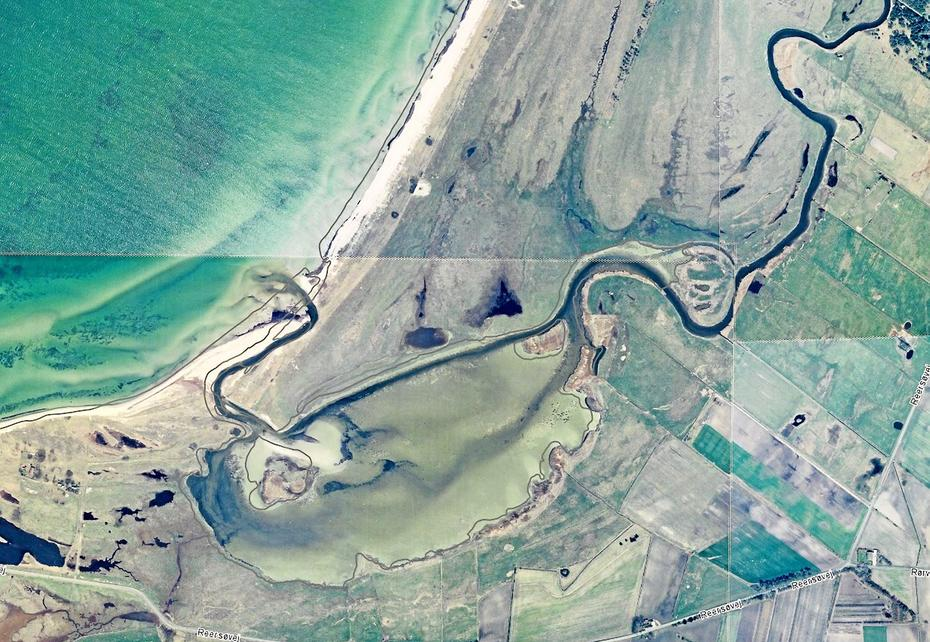

Halleby Å er en lang å, der løber her fra Skarresø og hele vejen ud i Storebælt. Åen løber igennem store dele af Naturparken Åmosen og afvander et område på ca. 525km2. Åen løber også ind i Tissø, den anden store sø i naturparken, som er endnu større end Skarresø og også meget dybere.
Her ses åens udløb i Jammerbugten, hvor åen løber ud i Storebælt. Her løber åen også igennem brakvandssøen Flasken. Flasken og åens udløb er et af de sidste uregulerede å-udløb på Sjælland, og er en del af en naturfredning på i alt 285 hekrar, der blev oprettet i 1979.